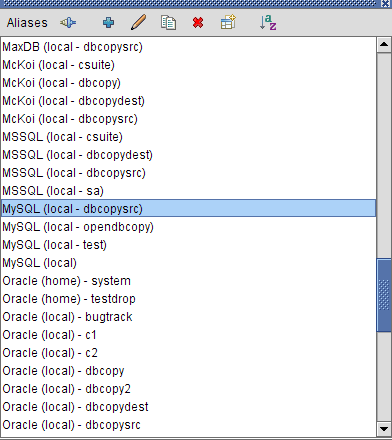
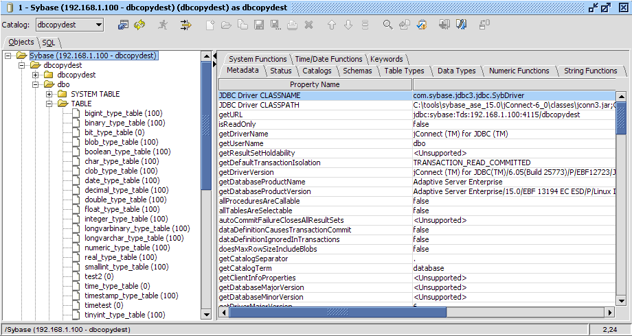
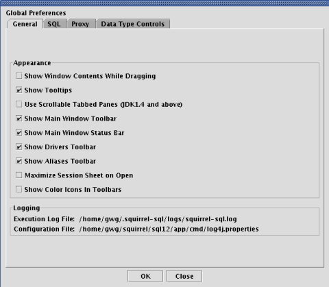
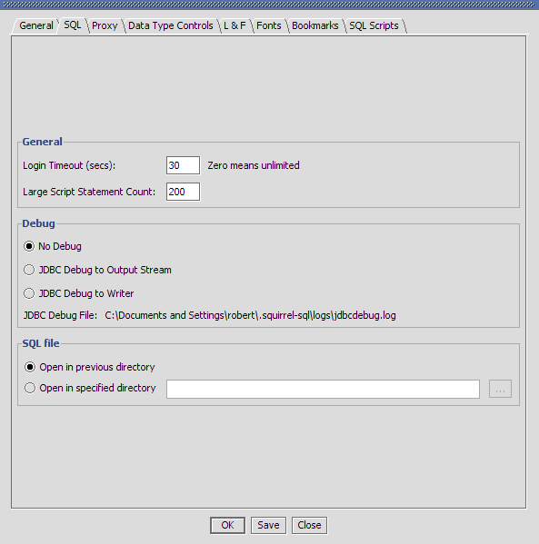
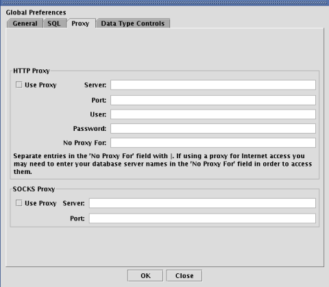
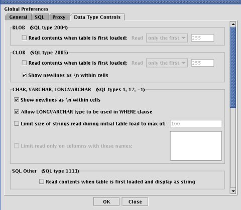
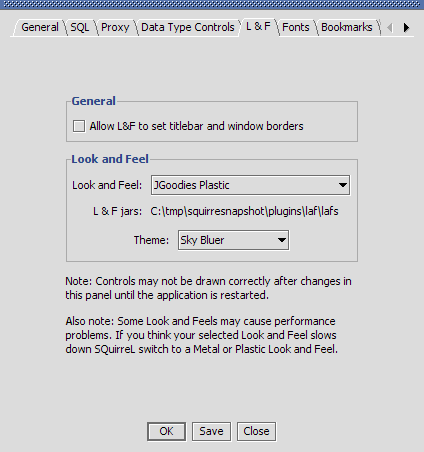
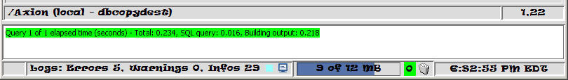
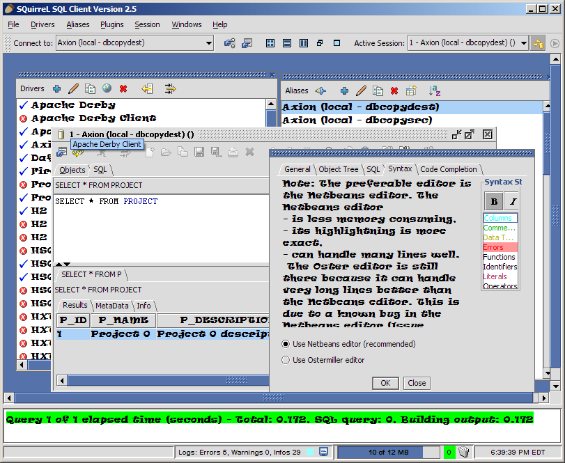

SQL Client Help File |
SQuirreL SQL Client is a graphical Java program that will allow you to view the structure of a JDBC compliant database, browse the data in tables, issue SQL commands etc. You need to be running at least version 1.5 of Java for SQuirreL version 2.4 and higher. See the Old Versions page for SQuirreL downloads that will work with older versions of Java.
It is free software, and you are welcome to redistribute it under the terms of the GNU Lesser General Public License.
The installer has been created using the IzPack Java Installer. Download the file squirrel-sql-<version>-install.jar and execute it with the command:
java -jar squirrel-sql-<version>-install.jar
On some operating systems (currently Windows NT, 2000 and XP) a shortcut will be created in the menu system. For Windows the file squirrel-sql.bat will run the application. For Unix the file is squirrel-sql.sh. The squirrel-sql.jar file is executable so on those operating systems that support it you can run SQuirrel by double clicking squirrel-sql.jar. You can also run it by issuing the following command:
java -jar squirrel-sql.jar
Just remember that when executing the jar file directly you don't use your current class path ($CLASSPATH on Unix or %CLASSPATH% on Windows) so if you have your JDBC drivers in your class path then SQuirreL won't see them. See The Driver for more information.
Some people have reported core dumps with the Sun JDK1.3.1 running under Linux. If this happens passing the -classic flag to the java executable appears to fix the problem. No similar problems have been reported with any other JDK on Linux.
The behaviour of SQuirreL can be changed by passing various arguments to it.
squirrel-sql.sh [options] or squirrel-sql.bat [options] Options: -userdir,--user-settings-dir <userdir> User settings directory -l,--log-config-file <config-file> Logging configuration file -home,--squirrel-home <home> SQuirreL home directory -n,--native-laf Use native look and feel -nop,--no-plugins Don't load plugins -nos,--no-splash Don't display splash screen -m,--use-default-metal-theme Use default metal theme -h,--help Display Help and exit
-userdir specifies where SQuirreL stores its per-user settings such as application preferences etc. This defaults to <home>/squirrel-sql.
-home specifies the directory that SQuirreL was installed into. It is setup during the installation process. You should never need to change this argument.
A number of default driver definitions ship with SQuirreL. These are added to the Drivers List window (View Drivers option on the Windows menu) when you first start up SQuirreL.

The  icon next to a driver definition indicates that
it has been successfully loaded while the
icon next to a driver definition indicates that
it has been successfully loaded while the  icon
indicates that the JDBC driver could not be loaded and so cannot be used
to connect to a database.
icon
indicates that the JDBC driver could not be loaded and so cannot be used
to connect to a database.
All of the default driver definitions assume that the JDBC driver classes are in the current class path or in your JRE extensions directory (consult the documentation for your Java implementation for more information on this). If this is not the case you will need to modify the driver definition to point to the jar file or the classes directory that contains these classes.
You can create new driver definitions using the New Driver option on the Drivers menu.

This is an example of a driver definition. This dialog can be displayed by selecting a driver definition in the Drivers List window and then selecting the Modify Driver option from the Drivers menu.
The Name text field specifies an easy to remember name for the database driver definition and is the text shown in the Drivers List window.
The Example URL shows an example URL for this driver. This can be found in the documentation that comes with the driver. This is only an example URL, the actual URL is defined in the alias.
The entries in the Java Class path tab show the directories and jars in the current class path. Pressing the List Drivers button will place the class names of all the JDBC drivers found in the class path into the Class Name dropdown control.
The Class Name specifies the class name of the JDBC driver. Either select an existing entry in the dropdown or key in the class name of the JDBC driver (it can normally be found in the documentation that comes with the driver).
The Extra Class Path tab allows you to select a JDBC driver that is in a jar file or a directory that is not in the current class path.

The Add button will display a File Open dialog allowing you to select one or more jar files or directories. The Delete button allows you to remove a jar file or directory from the list. The Up and Down buttons allow you to change the sequence of the entries. The List Drivers button will place the class names of all the JDBC drivers into the Class Name dropdown.
Press the OK button to save the driver definition and close the window or the Close button to close the window without saving any changes.
Now you need to create an alias to your database.
Display the Aliases List window (View Aliases option on the Windows menu). When you run SQuirreL for the first time this window will be empty.

Take the New Alias option from the Aliases menu and the following dialog will be displayed.

Enter an easy to remember name in the Name field for this database URL. This is the text that will be displayed in the Aliases List Window.
Select the driver for this alias from the Driver dropdown or click on the New button to create a new driver definition.
Change the URL to point to your database.
Optionally enter a user name if you want the alias to default to a specific user.
The Test button will allow you to attempt to connect to your alias to ensure that the parameters you have entered are correct.
Press the OK button to save the alias definition and close the window or the Close button to close the window without saving any changes.
The new alias should now appear in the Connect To dropdown. Select it in the dropdown and enter your user name and password in the connection dialog, press OK and you should be connected.
When you first connect to a database a Session window will be shown.

The Object Tree on the left shows the structure of the database. Clicking on various nodes within this object tree will show further information in the right hand detail panel. In this example the database metadata is shown. Clicking on the title of a column will sort the display by the data in that column. This is true of all tabular displays in SQuirreL.

This shows the data displayed when a table is selected in the Object Tree.
SQL can be executed from the SQL tab in the window that opens once you have connected to an alias. Multiple statements can be executed and the results will be displayed in multiple tabs below the SQL entry area.
When the SQL tab is selected pressing <ctrl><enter>, taking the Execute SQL option from the Session menu or pressing the Execute SQL button in the session window tool bar will execute the entered SQL.
If a single statement is entered then pressing <ctrl><enter> will execute just that statement.
If you only want to execute part of the SQL entered then highlight the SQL that you want to execute and press <ctrl><enter>.
To only execute a single statement amongst several statements (separated from the other statements by at least one blank line) within the SQL entry area then click on the line containing the statement that you want to execute and press <ctrl><enter>.
The characters -- at the beginning of a line will turn it into a comment.

As can be seen in the above screen shot, double clicking in a cell in the query results will open up a new window showing the entire contents of the cell.
Especially plugins add a lot of functions to the SQL editor. The tools popup shows all these functions and allows to execute the functions. The functions in the popup may be filtered by typing there selection string. The tools popup is opened by the ctrl + t shortcut

The  icon on the tabbed folder
containing the SQL results allow you to "tear off" the query
results from the tabbed folder and display it in its own window.
icon on the tabbed folder
containing the SQL results allow you to "tear off" the query
results from the tabbed folder and display it in its own window.

Editing Data in the SQL Results Tables
The data displayed within the SQL Results may be edited in the same manner as the data within the Contents Tab. You should read that section to understand the capabilities and limitations of data editing, including the use of the Popup window to import and export data. In addition, there are two things that you need to know about editing in the SQL Results:
"SELECTIn addition, the name of the table must be unique within the entire DB. This means that if you have multiple catalogs or schemas which have that same table name defined in them, Squirrel cannot determine which to use and thus will not allow data to be updated in the DB. (Squirrel is just a bit stupid on this point: it will let you edit the data, and then tell you that it cannot update the DB when you exit the cell being changed.)FROM " or "SELECT FROM WHERE ..."
The Contents Tab and Editing Data
SQuirreL allows you to easily view and change the data in a single table. Data may be changed just by typing the new values when you are viewing the table in the Contents tab under the Objects view. The data may also be viewed and edited in a larger popup window, which has more capabilities, by double-clicking on the cell. There are some small differences between the in-cell editing and editing in the Popup, so be sure to read the Using the Popup Window information.
Viewing Data in the Contents Tab
After connecting to a database, you may view the data in a single table
by using the Contents Tab.
To get to the contents tab, first select the Objects view. Next, look under the tree in the window on the left. The exact organization of this window is different for each DBMS, so you may have to do a bit of exploring. What you are looking for is a list of table names, and they are usually found under a heading labeled "TABLE" or "TABLES". The "TABLE" heading may itself be under another heading, such as the name of the database instance. When you find the list of table names, click on the name of the table that you wish to view, and then in the window on the right click on the tab labeled "Contents".
The data in the table will be displayed in rows and columns based on the format selected (see Setting the Format and Editing Mode).
The column ordering is the order of the rows in the table definition. That order may be changed by drag-and-drop, which means clicking on the column header and holding the mouse button down while dragging the column horizontally to another location. Columns are initially displayed with a moderate width so that you can see a reasonable amount of data in as many columns as possible within the limited window space. You may increase or decrease a column's width by click-and-hold on the space between two columns, then moving the mouse left or right to change the column widths.
The rows are initally unordered. However, after retrieving the data, you may sort the rows based on the values in a column by single-clicking on a column header. That will sort the rows into an order with the values in the selected columns starting with the "smallest" value. Clicking on the same column header again will reverse the order ("largest" first). You can limit the number of rows retrieved (see the Session Properties, Object Tree).
There are a few special cases for how data is displayed.
One word of warning. Some DBMSs that claim to have BLOB and CLOB data types actually implement those types using BINARY, VARCHAR, or other types of fields. In those cases, the cells will act as they would for the BINARY, VARCHAR, etc., data types, and not as described above for the BLOB/CLOB types. (There is a functional difference in that "real" BLOB/CLOB types return a "locator" or "reference" object rather than the actual data. Using the locator allows SQuirreL to defer reading the actual data until you need it rather than reading it all during the initial display of the Contents Tab.) To see if your DBMS uses real BLOB/CLOB types, go to the Objects view, then select the top element in the tree in the left window and "Data Types" in the right window. In the column labeled "DATA_TYPE", real BLOBs will have the value 2004 and real CLOBs will show 2005. If your DBMS does not have 2004 and 2005 listed under the "DATA_TYPE" field, then it does not support the BLOB/CLOB functionality provided by SQuirreL. As an example, the MySQL DBMS claims to support BLOBS, but in the "Data Types" table it shows that the "TYPE_NAME" of "BLOB" is actually using the "DATA_TYPE" of "-4 [LONGVARBINARY]", so a "BLOB" field in MySQL will be treated by SQuirreL as a LONGVARBINARY and not as a "BLOB".
When SQuirreL is initially set up, the Contents Tab will be set in a read-only mode. This is a safety precaution. Once a table is made editable, changing the contents of a cell causes the database to be immediately updated. While extremely convenient, this is dangerous. With this capability enabled, it becomes very easy to accidentally destroy data, violate some consistancy checks, mis-direct references between tables, etc. On the other hand, the author of this feature runs with editing always enabled. It is simpler that way, but has the potential for disaster. You have been warned!
You can set SQuirreL so that tables are editable all the time, or you can enable editing on a specific table as you are working on it. Either option may be set as your default mode of operation, and either option may be selected for use on a specific table.
Editing may only be done in Contents tab in the Object view, not on the results of manually entered SQL queries run under the SQL view.
To set the default format and edting mode for the Contents Tab for new sessions take the New Session Properties option from the File and click on the General tab. The Table Contents dropdown list gives the following options:
After you have connected with a database, you may change the format or editing mode for the data in the Contents tab by the Session Properties option from the Session and clicking on the General tab and changing the selection for Table Contents.
Note that the individual data items may be displayed in different formats as described in "Data Type Controls" .Here is how to edit data in the table:
If the data in the cell gets really messed up and you are confused about what is going on, press the <delete> key until the original data appears (see below). If that doesn't work then immediately close the database connection without leaving the cell (<ctrl>W or click the close button). This will abort the operation and avoid changing the DB.
If the cell contains a NULL value, that is shown as the string
"<null>". To change that to a non-null value, just type the new
data. When you enter the first character of the data, the "<null>"
will be replaced by that character.
NOTE: This means that SQuirreL will not allow you to enter a string with
the value "<null>" into a nullable column, since that string will
be interpreted by SQuirreL to be the null value. Also, if you have a
field in the database containing the string "<null>", do not edit
that field using SQuirreL since the value will be replaced by the null
value.
To change the value of a nullable cell to NULL, just delete all of the data in that cell. When you delete all of the data in a cell, the contents of the cell will be set to "<null>". Since the VARCHAR data types allow a non-null empty string, for those cells you must delete all of the data so that the cell is blank, and then press delete. The VARCHAR cell will then be set to <null>.
If a cell is not nullable, deleting the last character in the cell will leave the cell blank. You may then enter new data for the cell.
To restore the cell to its original value, delete all of the data in the cell, then press the delete key one more time. This will cause the cell to be reset to its original value. For cells that allow nulls, continually pressing the delete key causes a cycle:
original data -> delete data -> <null> -> original data
and for cells that do not allow nulls:
original data -> delete data -> blank cell -> original data
Thus, if you mess up the contents of a cell, repeatedly press the delete key until you see the original data reappear.
When leaving the cell, if the cell data is identical to the original contents of the cell, the DB will not be updated.
To insert a row into the table, click the right mouse button, and choose the "Insert row" option from the menu This brings up a separate window showing the columns of the table with two rows The first row contains the data to be filled i with default values as defined for the table's column already filled in The second row shows information about the field including the type of data, the field length (if known), and so forth You should edit the values in the first row in the same way that you would if that row already existed in the table When the data in the row is the way you want it, click the "OK" button to have the row entered into the table
If there are no rows in the table when you open the Contents Tab clicking the right mouse button brings up a menu with only the "Insert Row option You may use this in the normal manner to enter the first row in the table
To delete one or more rows from the table select the rows to be deleted, then click the right mouse button an choose the "Delete Rows" option from the menu
When you double-click in a cell, a Popup window is displayed. For simple data (e.g. integers, floats, or simple strings) you will be able to edit the data directly in the cell, but there are some times when you will need to use the Popup:
To use the Popup, double-click in the cell to start the Popup, then edit the text in the text window. Editing uses the same mechanism as the in-cell editing where repeatedly typeing the backspace key eventually restores the original data in the window. One difference from the in-cell editing is that, depending on the data type being displayed, you may enter newline and tab characters into strings when in the Popup. When you are done editing, click on the "Update DB" button to put the changed data into the Database. The "Cancel" button closes the Popup without changing the Database.
For Binary data types, the data may be changed from the default Hex representation into Decimal, Octal or Binary formats. You may also choose to view bytes of data that correspond to printable ASCII characters as the character rather than in their numeric form. This may be useful if the file contains strings, in which case you could see "ContentsTab.java" instead of "43 6f 6e 74 65 6e 74 73 54 61 62 2e 6a 61 76 61".
The Popup window provides line-wrap and word-wrap functions. These are accessed in the menu brought up by right-clicking in the text area. Both of these options are toggle-switches that flip from on to off or off to on each time you click on them. The word-wrap function operates only when the line-wrap function is on.
The Popup window also allows you to import data into a cell, export data from the cell to a file, and operate on the data using an external command.
xterm -e vi myfilenameyou could type
xterm -e vi %fwhich makes the command more general and avoids the need for you to edit the command for each file.
Note: SQuirrel does not provide a window for the command to operate in, so you may need to provide for that as part of the command. For example, to run VI on Linux you may need to enter the command:
xterm -e vi %fto have VI run in a window visible to you. If you just enter "vi %f" as the command, you will not get a window to operate in. Other commands (e.g. gimp) provide their own windows, so the extra step will not be necessary for them.
In all of the above cases, the entries you make in the "File:" and "Command" fields will be associated with that column so that you do not need to re-type them the next time that you edit that field. You may, of course, change those values at any time.
Also, if you just want to set the default values for a particular column, you can enter the "File:" and "Command:" field information and click on "Apply".
Some DBMSs implement "standard" data types in non-standard ways For example, we know that many DBMSs claim to implement the BLOB data type but they actually store that data using a BINARY or LONGVARBINARY field SQuirreL uses the actual data type as defined in the DATA_TYPE field in the Columns tab for the table, not the TYPE_NAME Thus it is possible that you may think you are working with one type of data but actually using something else so controls and limitations on specific data type (e.g. limiting the data read when loading the Contents tab may not work as expected.
SQuirreL allows editing only on cells that are defined using the basic standard SQL data type (see Data Types) If your DBMS provides other data types, you can create a plug-in that supports the (see the file net/sourceforge/squirrel_sql/fw/datasetviewer/cellcomponent/CellComponentFactory for more information)
Some attempt has been made to validate user input for each of the types. For example, INTEGER fields allow only digits and '-' as input. However, not all of the necessary information is supplied by all DBMSs, so we cannot do a complete validation of user input in all cases. For example, we cannot check that a value entered for a SMALLINT field will fit into a SMALLINT column in a specific DBMS. Also, the drivers for each DBMS provide different amounts of information for the same field type in different situation, and SQuirreL cannot validate the input when such data is missing The "validation of last resort" is done when we try to do an update on the DB. The DBMS either succeeds or it fails, and if there is an error we display that message to the user with the information that the DB has not been updated.
VARCHAR fields containing tabs or newlines may only be edited in the Popup window Fields that can only be edited in the Popup are displayed with a cyan background
VARCHAR fields that may be set to null cannot be set to the string value "<null> " (without the quotes). VARCHAR fields in the database may include that value as long as you do not try to edit them
Tables with a large number of columns or with a column containing a very long value (not includeing BLOB/CLOB data types) may get an error when trying to update the DB because the WHERE clause is too long. In this case you should open the table in a session, go to the Session menu in the main window, and select the entry "Limit cell edit WHERE clause size" That tool lets you specify which columns SQuirrel should use in the WHERE clause when doing the requested update on the cell contents See Session Menu .The DB updates are based on the assumption that the list of DB column names and their values for the current row are unique, or if they are not unique, that all of the rows with those values are to be updated in the DB. For example, if you have a database with columns a, b, and c, and in a particular row you have the values
a=34 b='your name' c=55
and you change column c to be 66, then SQuirreL does the following:
update <table> set c=66 where a=34 and b='your name' and c=55
To help distinguish rows that are similar to each other, any DBMS that provides a pseudo-column to uniquely identify each row (such as Oracle's ROWID) has that pseudo-column included in all querys.
The problem with this is that some columns cannot be differentiated in this way, most notably BLOBs and CLOBs. Thus, if your table contains BLOB or CLOB columns, SQuirreL may think that rows are identical because all of the non-BLOB/CLOB fields are identical, but the rows are actually not the same because the contents of the BLOB/CLOB fields differ. This could lead to "erroneous" warning messages.
Any data that is displayed in a Table may be printed. This includes all of the meta-data tables displayed in the Object View as well as the Contents Tab and SQL Results tables. To print, first make sure that the Session Properties for the type of information (Meta Data, Table Contents, or SQL Results) has been set to either "Table" or "Editable Table". Then, with the cursor over the table to be printed, click on the right mouse button and click on "Print". This will bring up a dialog box in which you can adjust the parameters of the print job. When you tell the dialog to print, the selected table will be printed.
Tables that are too wide or too long to fit onto one page will be printed across multiple pages that can be pieced together to show the entire table.
If the Session Properties for "Table Contents" or "SQL Results"
have been set to "Text", then the data within the Contents Tab or SQL
Results tables (respectively) may be copied and pasted into a separate
window for printing.
Data Types
This is a quick description of how SQuirreL handles various data types when displaying the results of SQL statements. SQuirreL uses the column type (ResultSetMetaData.getColumnType(...)) from the metadata for the result set to determine how to display the column.
The JDBC specification (in file java.sql.Types) defines several codes whose semantics are not understood by SQuirreL: JAVA_OBJECT, DISTINCT, STRUCT, ARRAY, REF, and DATALINK. These are all handled as "Any other type" as described above.
Global Preferences specify configuration settings for the application.
The descriptions included here are for the tabs created by the core product. Plugins may add other tabs to this window. See the Plugin-specific help for descriptions of the tabs added by that plugin.
Show Window Contents While Dragging - If checked this shows the contents of windows as they are being dragged. If unchecked only the outline of the window will be shown. Uncheck for a speed improvement on slow machines.
Show Tooltips - If checked then tooltips (or hints) will be shown when the mouse "hovers" over some controls.
Use Scrollable Tabbed Panes - If checked will display the tabs in tabbed folders in a scrollable region rather than wrapping them when all tabs will not fit within a single run.
 |
 |
|
| Stacked Tabs | Scrollable Tabs |
Show Main Window Tool Bar - If checked then the tool bar will be displayed in the main window.
Show Main Window Status Bar - If checked then the status bar will be displayed in the main window.
Show Drivers Tool Bar - If checked then the tool bar will be displayed in the Aliases Window.
Show Aliases Tool Bar - If checked then the tool bar will be displayed in the Aliases Window.
Maximize Session Sheet on Open - If checked then when a session is opened it will automatically maximize to the whole space available within the Squirrel window. If not checked, it is opened using a smaller part of the space.
Show Color Icons in Toolbars - If checked then the icons in the toolbars are shown in color. If not checked, the icons are in black-and-white.
Execution Log File - This (display only) setting tells you the name (and location) of the logging file for SQuirreL. If the file name is too long for the label then the full name will be displayed in a tooltip.
For more information see Logs .Configuration File - This (display only) setting tells you the name (and location) of the logging configuration file for SQuirreL. If the file name is too long for the label then the full name will be displayed in a tooltip.
For more information see Logs .
Login Timeout - Sets the maximum time in seconds that a JDBC driver will wait while attempting to connect to the database.
Large Scrip Statement Count - By default, a script is considered large if it has > 200 SQL statements selected for execution in the script. When this is set to zero, large script execution support is disabled. Large script support consists of the following behavior during execution:
No Debug - If checked then no debugging information is output from Squirrel.
JDBC Debug to Output Stream - If checked tells the JDBC drivers to write debugging information to the JDBC Debug File. Depending on the JDBC driver you are using this may generate a lot of output and significantly slow down SQuirreL.
JDBC Debug to Writer - If checked tells the JDBC drivers to write debugging information to the JDBC Debug File. Depending on the JDBC driver you are using this may generate a lot of output and significantly slow down SQuirreL.
JDBC Debug File - If JDBC Debug is enabled then this (display only) setting is the file that the debug information will be written out to. If the file name is too long for the label then the full name will be displayed in a tooltip.
The JDBC Debug to Output Stream has been deprecated by JavaSoft in favour of the JDBC Debug To Writer option. However some older JDBC drivers may use the Output Stream rather than the Writer. Other drivers (such as the oracle 8 JDBC driver) may write different information to the Output Stream than they do to the Writer.
Open in previous direcory When opening files in the SQL editor, sets the location in the file chooser to be the last directory that a script file was opened from.
Open in specified direcory When opening files in the SQL editor, sets the location in the file chooser to be the directory that is specified in the text field.

Use Proxy - If checked then a HTTP proxy server will be used for connecting to servers.
Server - The name (or IP address) of your proxy server.
Port - The port number to use on the proxy server.
User - The user name to use to log onto the proxy server.
Password - The password to use to log onto the proxy server.
No Proxy For - A list of servers (separated by |) that do not need to be accessed through your proxy server.
Use Proxy - If checked then a SOCKS proxy server will be used for connecting to servers.
Server - The name (or IP address) of your proxy server.
Port - The port number to use on the proxy server.
The contents of this tab may change depending on what Plugins you have loaded. Plugins are allowed to define new Data Types or override the existing Data Types, and that may add or remove controls from this window. The following describes the standard Data Type controls with no changes made by any Plugins.
Even with only the default Data Type Controls defined, there are still two screens of them to describe.

Read contents when table is first loaded - If checked then the actual contents of the BLOB is read when the table is first loaded. This is usually not recommended because it usually degrades performance. If this is not checked, then the data will initally display as ">Blob<" in the table, and the entire contents will be read in and displayed when you click on that cell.
Read - If reading the contents during initial table load, select whether to read the entire contents or just part of the data. If only part of the data is read, then the entire contents will be read when you click on that cell.
(number) - When reading part of the data during inital table load, how many bytes to read.
Read contents when table is first loaded - If checked then the actual contents of the CLOB is read when the table is first loaded. This is usually not recommended because it usually degrades performance. If this is not checked, then the data will initally display as ">Clob<" in the table, and the entire contents will be read in and displayed
Read - If reading the contents during initial table load, select whether to read the entire contents or just part of the data. If only part of the data is read, then the entire contents will be read when you click on that cell.
(number) - When reading part of the data during inital table load, how many characters to read.
Show newlines as \n within cells - If checked, when the data contains newlines, the newlines will be displayed as "\n" within the cell. When unchecked, the newlines are ignored within the cell. The difference is between seeing:
first line\nsecond line\nthird line
and
first linesecond linethird line
Note that this option does not affect display in the Popup window, where
newlines actually become new lines.
Show newlines as \n within cells - If checked, when the data contains newlines, the newlines will be displayed as "\n" within the cell. When unchecked, the newlines are ignored within the cell. The difference is between seeing:
first line\nsecond line\nthird line
and
first linesecond linethird line
Note that this option does not affect display in the Popup window, where
newlines actually become new lines.
Allow LONGVARCHAR type to be used in WHERE clause - When checked, the LONGVARCHAR type is used in WHERE clauses just as other types. When unchecked, columns of type LONGVARCHAR are not used in the WHERE clause when performing edits in the cell data. This is necessary because some databases (e.g. Oracle, DB2) do not allow LONGVARCHAR data types to be used in WHERE clauses and generate odd error messages when they are seen.
Limit size of strings read during initial table load ... - When checked, the amount of string data loaded during the initial table read is limited to a maximum size (see next field). When unchecked, the amount of data is not limited. (Note: This was originally built as a performance improvement, but the implementation actually reads all of the data from the DB in either case and just displays or does not display all of it, and thus may not make an impact on performance.) If the inital data read is limited, the entire data contents will be displayed when the user clicks on the cell.
... to max of - When limiting the size of the data, this defines how many characters to display.
Limit read only on columns with these names: - When limiting the size of data during the initial table load, only apply the limit to columns with the names listed in this box. All other columns load all of the data. (This was built as a technology demo to show how Data Type Controls, which are global to all columns of the given SQL type(s), can be applied selectively to a limited set of columns.)
Read contents when table is first loaded and display as
string - If checked then columns of this SQL Type will be read by
Squirrel and displayed using the toString() function.
Warning: Since fields of this data type are not known to Squirrel and
have been explicitly defined as NOT being of a normal, known type,
attempting to display them as Strings may result in unintelligable
displays, and may cause exceptions during processing.

Read contents when table is first loaded and display as
string - If checked then columns of this SQL Type will be read by
Squirrel and displayed using the toString() function.
Warning: Since fields of this data type are not known to Squirrel and
have been explicitly defined as NOT being of a normal, known type,
attempting to display them as Strings may result in unintelligable
displays, and may cause exceptions during processing.
Use default format(yyyy-mm-dd) - If checked then dates will be displayed in the JDBC default format as shown. If unchecked, then the "locale-dependent" formats are made available.
or locale-dependent format: - When not using the default format, this allows you to select from one of the other available formats.
allow inexact format on input - If checked then Squirrel allows some flexibility when you type a new value for the field.
Use default format(hh:mm:ss) - If checked then times will be displayed in the JDBC default format as shown. If unchecked, then the "locale-dependent" formats are made available.
or locale-dependent format: - When not using the default format, this allows you to select from one of the other available formats.
allow inexact format on input - If checked then Squirrel allows some flexibility when you type a new value for the field.
Use default format(yyyy-mm-dd hh:mm:ss.msec) - If checked then timestamps will be displayed in the JDBC default format as shown. If unchecked, then the "locale-dependent" formats are made available.
or locale-dependent format: - When not using the default format, this allows you to select from one of the other available formats.
allow inexact format on input - If checked then Squirrel allows some flexibility when you type a new value for the field.

This tab is installed by the Look and Feel (L&F) plugin which is part of the "standard" plugin set. If you didn't choose to install the "standard" plugins then this tab will not appear.Allow L&F to set tilebar and window borders - allows you to specify whether the Look and Feel can set these, otherwise the Window Manager will set them. This setting only takes effect for newly created windows.
Look And Feel - allows you to specify which L&F family to use. This setting only takes effect for newly created windows.
Theme - If the selected L&F supports themes, this allows you to specify which one to use

Menus - If enabled this will override the default font with the selected font for menus/menu items in the toolbar and the popup menu. Pictured below is the main frame menubar with Ravie 12-point Bold font.

Static Text - If enabled this will override the default font with the selected font for labels on Tabs and Object Tree Nodes. The picture below shows a session window with Ravie 12-point Bold font.

Status Bars - If enabled this will override the default font with the selected font for labels on status bars. The picture below shows a session window status bar and the main application status bar with Ravie 12-point Bold font.

Other - If enabled this will override the default font with the selected font for labels in many places not already covered by the preceding settings. The picture below shows "other" labels with Ravie 12-point Bold font.

The font tab is also installed by the Look and Feel (L&F) plugin which is part of the "standard" plugin set. If you didn't choose to install the "standard" plugins then this tab will not appear. There may be other tabs present in the Global Preferences dialog (plugin-specific) which are not listed here. See the plugin documentation for details. For preference tabs installed by plugins, the tab name should match the plugin name.The "New Session Properties" dialog allows you to specify settings for future session. To change the settings for existing sessions use the "Session Properties" menu option. The descriptions included here are for the tabs created by the core product. Plugins may add other tabs to this window. See the Plugin-specific help for descriptions of the tabs added by that plugin.

Show Tool Bar - If checked then display a toolbar on the session window.
Main Tabs - Defines where the Main tabs (ie: "Objects" and "SQL") in the session window go relative to the data being displayed. This may be set to top, bottom, left or right.
Object Tabs - Defines where the tabs in the Object window (eg: Metadata, Contents, Status, etc.) go relative to the data being displayed. This may be set to top, bottom, left or right.
SQL Execution Tabs - Defines where the tabs for the sets of results from SQL execution in the SQL window go relative to the data being displayed. This may be set to top, bottom, left or right.
SQL Results Tabs - Defines where the tabs within a single SQL result window ("Results", "Metadata" and "Info") go relative to the data being displayed. This may be set to top, bottom, left or right.
Meta Data - Specify the output type (text, read-only table, or editable table) for meta data displays.
Table Contents - Specify the output type (text, read-only table, or editable table) for the Contents tab in the Ojbect display.
SQL Results - Specify the output type (text, read-only table, or editable table) for SQL result displays. (Note that there are additional limits on what can or cannot be edited in the results of SQL queries, so setting this to "Editable table" may not result in an editable output for any given query. See Editing the SQL Results for details.)

Load Schemas/Catalogs into object tree - If checked then the global DB information is automatically loaded into the Object Tree view of the Database. This is useful for navigating the entire Database contents, but it may cause an unacceptable performance penalty, e.g. when using Squirrel for remote access through a low-bandwidth connection.
Show Row Count for Tables (can slow application) - If checked then when a table is opened the number of rows in the table is included in parentheses after the name of the table in the message bar at the bottom of the Squirrel windows. If not checked, then the number is not shown. Showing the number may slow the application. The number is still available by using the "Row Count" tab in the Object view.
Contents - Limit rows [number] rows - If checked then the number of rows read from the table is limited to the number in the text box, which may be adjusted as needed. If not checked, then Squirrel will attempt to read the entire table.
Limit Schema Objects using these comma-delimited prefixes: - Limit the list of objects shown in the Object Tree to only those with Schema names that start with the entries in this box. If the box is empty, then no limiting is done and all objects are shown.
Limit Catalog Objects using these comma-delimited prefixes: - Limit the list of objects shown in the Object Tree to only those with Catalog names that start with the entries in this box. If the box is empty, then no limiting is done and all objects are shown.
Object Filter - Limit the list of objects shown in the Object Tree to only those with names that match the pattern specified in this box.

Auto Commit - If checked then all SQL will be automatically committed after it is executed. If unchecked then you will be able to use the "Commit" and "Rollback" options on the "Session" menu.
Show SQL Results MetaData (can slow application) - If checked then the MetaData associated with the results of an SQL query will be read and made available to the user. This may slow down Squirrel operation, espcially when being used over low-speed connections. If unchecked, then the MetaData will not be avilable for the SQL query results.
SQL Results - Limit Rows [number] rows - If SQL - Limit rows is checked then only the number of rows specified in the rows will be displayed for an SQL query.
Abort on Error - If checked then when executing multiple commands in a single sequence, if one of the commands returns an error, then the sequence is aborted at that point. If not checked, then the SQL commands following the one with the error are executed anyway.
Statement Separator - The character used to separate SQL statements in the SQL entry area.
Start of Line Comment - The character that specifies that the line in the SQL entry area is a comment and should not be passed to the database for execution.
Font - The Font button allows you to specify the font to be used in the SQL entry area.
Share SQL History - if checked then the SQL history is shared accross all Sessions. If not, then the history is kept for this Session only.
Limit SQL History Combo Size [number] - if checked then limit the number of lines of SQL available in the SQL History Combo box (pull down list above the SQL command entry area) to the (adjustable) number given.
A plugin is an application written in Java that runs within SQuirreL. This allows developers to enhance the functionality of SQuirreL without having to rebuild the SQuirreL application itself. It also allows you to "pick and choose" the functionality that you want in SQuirreL. For instance if you don't use Oracle then you don't need the Oracle specific functionality supplied by the Oracle plugin.
All supported plugins are available in the install jar and can be installed at the same time when installing SQuirreL, or at any time afterward. Third-party plugins can be installed by unpacking the archive file (*.zip, *.gz) into the plugins directory within the SQuirreL application directory keeping the directory structure. To use the plugin you will need to restart SQuirreL. The SQuirreL project team no longer makes individual plugins available for download.
The "Summary" option on the "Plugins" menu will display a dialog box showing the plugins currently installed.

select * from table1 where entered_date = {d'2002-12-01'}
and take this option then the following will be appended to the SQL
entry area. select * from table1 where entered_date = TO_DATE ('2002-12-01', 'YYYY-MM-DD')